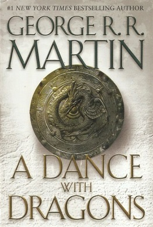

Eragon - Christopher Paolini
Quando Eragon encontra uma pedra azul polida na floresta, acredita que poderá ser uma descoberta bendita para um simples rapaz do campo: talvez sirva para comprar carne para manter a família durante o Inverno. Mas quando descobre que a pedra transporta uma cria de dragão, Eragon depressa se apercebe de que está perante um legado tão antigo como o próprio Império. De um dia para o outro a sua vida muda radicalmente, e ele é atirado para um perigoso mundo novo de destino, de magia e de poder.
Saber Mais
The Great Gatsby - F. Scott Fitzgerald
O romance relata o caos da Primeira Guerra Mundial. A sociedade americana vive um nível sem precedentes de prosperidade durante a década de 1920, assim como a sua economia. Ao mesmo tempo, a proibição de produção e consumo de bebidas alcoólicas, ordenada pelo 18° aditamento, fez grande número de milionários fora do circuito de venda de mercadorias e provocou um aumento do crime organizado. Nick Carraway, um jovem comerciante de Midwest, torna-se amigo de seu vizinho Jay Gatsby, um bilionário conhecido pelas festas animadas...
Saber Mais

A Dance With Dragons - George R. R. Martin
Na Muralha, o Comandante da Patrulha Jon Snow deve lidar com seu novo cargo, os selvagens e a presença de Stannis Baratheon e seus seguidores. Stannis marcha pela região para tentar conseguir apoio dos nortenhos e libertar Winterfell dos Bolton. Após conquistar Meereen, Daenerys Targaryen decide governar a cidade, mas tem inimigos dentro e fora dela. Relatos sobre seus feitos chegam aos Sete Reinos, e vários emissários são enviados até a rainha...
Saber MaisSinal De Vida - José Rodrigues dos Santos
Um observatório astronómico capta uma estranha emissão vinda do espaço na frequência dos 1,42 megahertz. Um sinal de vida. O governo americano e a ONU são imediatamente informados. Um objeto dirige-se à Terra. A NASA prepara com urgência uma missão espacial internacional para ir ao encontro da nave desconhecida. Tomás Noronha, o maior criptanalista do mundo, é recrutado para a equipa de astronautas.
Saber MaisOliver Twist - Charles Dickens
A ação desenrola-se no século XIX e centra-se na personagem de Oliver Twist que vive, miseravelmente, num orfanato, em Inglaterra. Mais tarde, o jovem é entregue a um proprietário de uma funerária que o maltrata. Após um desacato com um outro empregado da casa, Oliver foge e vai para Londres. Exausto e esfomeado, o rapaz é acolhido por um grupo de jovens ladrões, que trabalham para o velho Fagin. Do grupo de criminosos faz parte o ladrão Bill Sikes e a sua amante, Nancy. Um dia, Oliver é indevidamente acusado de roubo, mas...
Saber MaisSuite 605 - João Pedro Martins
Numa época em que Portugal está mergulhado na maior crise dos últimos cem anos, há uma ilha lusitana onde os piratas são invisíveis, mas o dinheiro desaparece. Sabia que a PepsiCo, Dell, Swatch, American British Tobacco e muitas outras multinacionais usam o offshore da Madeira para fugir aos impostos? SUITE 605 é a maior investigação realizada sobre a Zona Franca da Madeira. O autor de Revelações regressa para nos oferecer um cocktail explosivo que conta a história secreta de centenas de empresas que cabem numa sala de 100m2.
Saber Mais
The Hunger Games - Suzanne Collins
Num futuro pós-apocalíptico, surge das cinzas do que foi a América do Norte Panem, uma nova nação governada por um regime totalitário que a partir da megalópole, Capitol, governa os doze Distritos com mão de ferro. Uma anterior revolta fracassada dos Distritos contra Capitol resultou num acordo de rendição em que todos os Distritos se comprometeram a enviar anualmente dois adolescentes para participar nos Jogos de Fome - um espetáculo sangrento de combates mortais. No final, apenas um destes jovens escapará com vida… Katniss Everdeen é uma adolescente que se...
Saber Mais
Um Crime no Expresso do Oriente - Agatha Christie
Regressando de um importante caso na Síria, Hercule Poirot embarca no Expresso do Oriente em Istambul. O comboio está estranhamente cheio para aquela altura do ano, mas Poirot fica com um lugar assegurado pelo amigo Monsieur Bouc, director da Compagnie Internationale des Wagons-Lits, embora esse amigo não soubesse que o comboio se encontrava sem lugar para Poirot. Mas quando Mr. Harris não aparece, Poirot fica no seu lugar, para surpresa do seu colega de quarto, Mr. MacQueen. Contudo, na segunda...
Saber Mais
The Return of The King - JRR Tolkien
Depois da queda de Isengard e da destruição do bastão de Saruman (que dava poder a ele) a sociedade do anel começa uma viagem, menos Frodo e Sam, para convencer o rei de Rohan para ir ao auxílio de Gondor, apesar de haver poucos homens e terem lutado duro na batalha. Gondor ilumina os seus faróis pedindo ajuda, com um pequena ajuda de Gandalf, Rohan e arredonda tropas para ajudar na batalha perdida. No entanto, Strider (que na verdade se chama Aragorn) percebe o seu destino o rei de Gondor, e percebe também que ele precisa tomar um caminho diferente. Ele, junto com...
Saber MaisColuna de Fogo - Ken Follett
Natal de 1558. O jovem Ned Willard regressa a Kingsbridge, e descobre que o seu mundo mudou. As velhas pedras da catedral de Kingsbridge contemplam uma cidade dividida pelo ódio de cariz religioso. A Europa vive tempos tumultuosos, em que os princípios fundamentais colidem de forma sangrenta com a amizade, a lealdade e o amor. Ned em breve dá consigo do lado oposto ao da rapariga com quem deseja casar, Margery Fitzgerald. Isabel Tudor sobe ao trono, e toda a Europa se vira contra a Inglaterra. A jovem rainha, perspicaz e determinada, cria desde logo o primeiro serviço secreto do reino, cuja missão é avisá-la...
Saber Mais